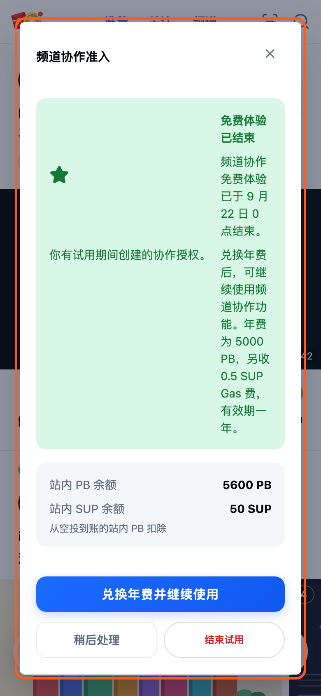
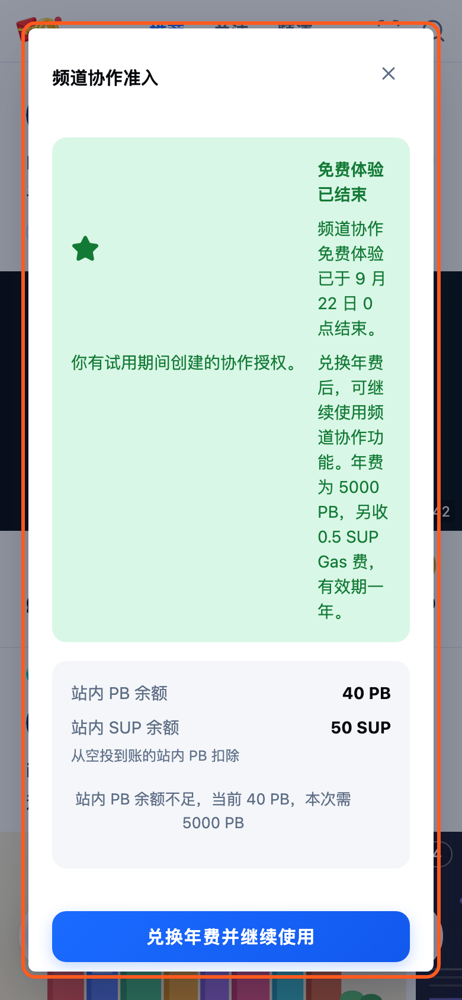
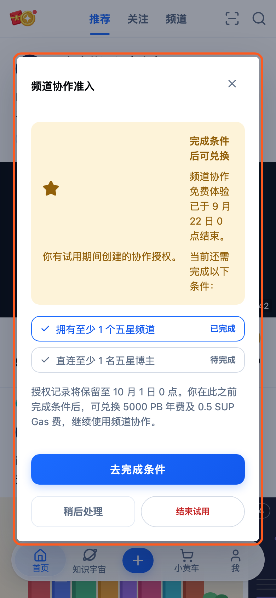
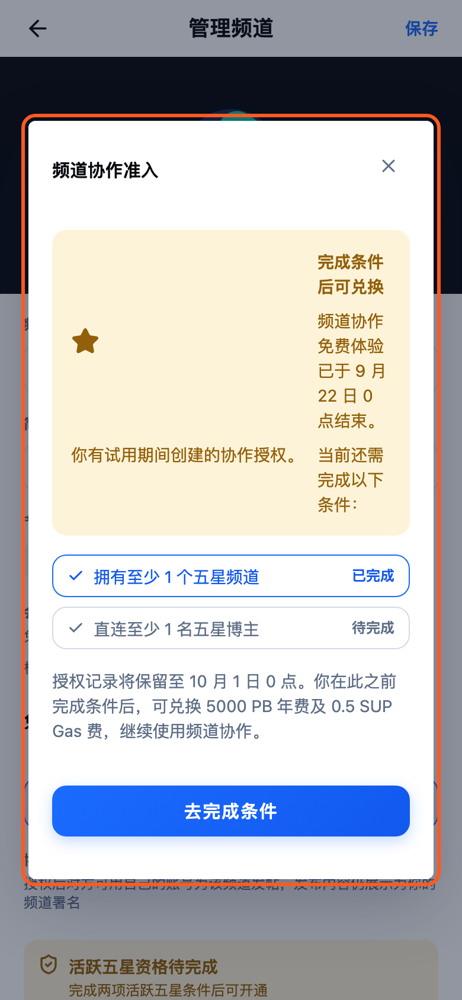
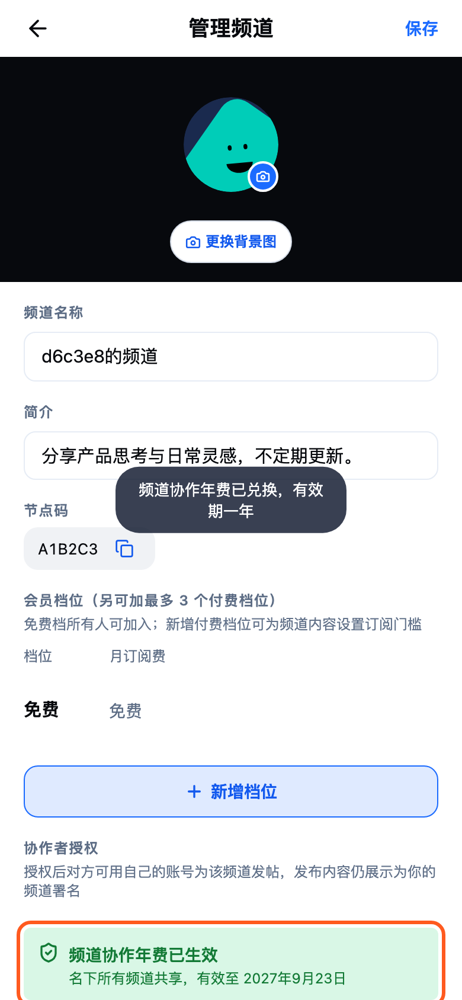
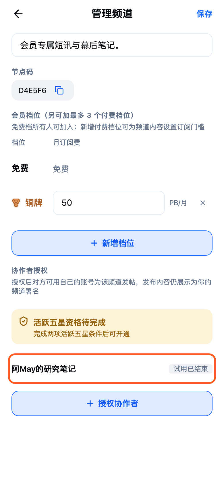

知识宇宙 · 功能交付
DAT-5 · 频道协作资格与 5000 PB 年费
频道协作从免费试用升级为“活跃五星资格 + 5000 PB 年费 + 0.5 SUP Gas 费”机制。本交付页按实际原型状态说明前端页面、交互分流及后端需要落地的资格、兑换、授权有效性与到期清理规则。
- 实现范围
- DAT-5 当前工作树（尚未提交）
- 日期
- 2026-09-21
- 涉及页面
- 信息广场首页 · 个人主页 · 我的频道 · 管理频道
- 原型边界
- 当前为本地 Mock 交互；后端接口、数据库与定时任务待开发实现

屏 1
已达标：年费开通提醒新增
- 信息广场首页
- 9 月 22 日后
- 频道协作准入
- 首页仅在用户已有对外授权、试用期已结束且当前没有有效准入时提醒
- 已满足活跃五星条件时，展示 5000 PB 年费、0.5 SUP Gas 费、两项余额和一年有效期
- 用户可兑换年费、稍后处理或结束试用；稍后处理只关闭本次首页访问中的提醒
开发注意
- 后端资格口径：本人至少拥有一个五星频道，并且直连五星博主数量至少为 1
- 年费是频道主级权益，一条有效兑换记录覆盖该频道主名下全部频道
- 兑换接口必须幂等；年费仅扣空投到账的站内 PB，同时按万分之一比例收取 0.5 SUP Gas 费
- 兑换、余额扣减和兑换记录创建应在同一事务完成；失败时不得生成记录或恢复授权

屏 2
余额不足：原地提示并保持暂停新增
- 信息广场首页
- 频道协作准入
- 兑换年费
- 余额不足时弹层保持打开，展示当前余额和本次所需金额
- 兑换失败后旧授权继续暂停，不进入地址校验，也不会发出新邀请
开发注意
- 后端返回可展示的余额不足错误，同时保持兑换历史、授权记录和 SUP 余额不变
- 前端兑换按钮需要防止重复提交；成功响应后再刷新余额、兑换记录和授权有效性

屏 3
未达标：保留期资格进度新增
- 信息广场首页
- 9 月 22 日至 10 月 1 日
- 频道协作准入
- 未达标用户看到两项资格的独立进度，以及 10 月 1 日 0 点的保留截止时间
- 此状态不提供兑换入口，也不允许新增协作者授权
- 用户可去完成条件、稍后处理或主动结束试用
开发注意
- 资格进度应由后端返回本人五星频道数量和直连五星博主数量，前端只负责展示
- 保留期内旧授权记录保留但不生效；用户达标并兑换年费后可恢复仍未撤销的记录
- 所有时间判断统一使用服务端时间与 UTC+8 业务时区，不能依赖客户端时钟

屏 4
管理频道：未达标时拦截新增授权改动
- 个人主页
- 我的频道
- 管理频道
- 授权协作者
- 管理频道内持续展示当前准入状态和下一步动作
- 未达标时点击“授权协作者”复用同一资格说明弹层，不进入地址校验表单
- 已达标但未兑换年费时先完成兑换，成功后自动继续原来的授权流程
开发注意
- 后端创建邀请接口仍需再次校验资格和有效年费，不能只依赖前端入口拦截
- 授权实际生效需同时满足频道主资格有效、年费有效、授权记录本身为待接受或已接受状态

屏 5
兑换成功：名下频道共享有效期改动
- 信息广场首页
- 兑换年费
- 个人主页
- 我的频道
- 管理频道
- 兑换成功后管理页展示“年费已生效”和明确到期日期
- 名下所有频道共享同一准入，不需要逐频道重复兑换
- 点击授权协作者可直接进入原有地址校验表单
开发注意
- 兑换历史记录 PB 金额、SUP Gas 费、两种钱包来源、兑换时间和到期时间；到期时间按兑换日增加一个日历年
- 有效记录查询应按频道主身份聚合，并处理重复请求、并发扣款及到期边界
- 年费到期后权限暂停；重新兑换年费可恢复仍未撤销、且未被系统结束的授权

屏 6
10 月 1 日后：旧试用授权系统结束改动
- 保留期后
- 个人主页
- 我的频道
- 管理频道
- 10 月 1 日后仍未达标且未兑换年费时，免费试用产生的待接受和已生效授权显示为“试用已结束”
- 记录继续保留用于历史展示，但之后达标兑换年费不会自动恢复，需要重新邀请
- 主动结束试用同样批量停止待接受和已生效授权，并在操作前二次确认
开发注意
- 系统清理只处理免费试用旧记录；已经达标但暂未兑换年费的记录继续暂停保留
- 建议由后端定时任务或读取时惰性校正完成，写入独立的系统终止原因，和用户主动撤销区分
- 代发频道列表、发帖署名和协作入口必须共用同一个授权有效性判断，避免各端状态不一致